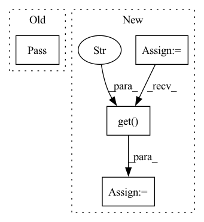

Pattern ID :6995

Before Change
pass
def on_trace_stop(self, signal, context):
pass
def on_trace_read(self, signal, context):
if self._framework:
signal.frameworks.append(self._framework)
After Change
for device in range(torch.cuda.device_count()):
if "pytorch_mem_stats" in context and device in context["pytorch_mem_stats"]:
start_mem_stats = context["pytorch_mem_stats"][device]
stop_mem_stats = _read_mem_stats(device)
mem_diff = _compute_diff(start_mem_stats, stop_mem_stats)
mem_alloc = signal.alloc_summary.add()
mem_alloc.allocator_type = signals_pb2.MemoryAllocation.AllocatorType.PYTORCH_CUDA_ALLOCATOR
mem_alloc.device_idx = device
mem_alloc.allocated_size = mem_diff.get("allocated_size", 0)
mem_alloc.reserved_size = mem_diff.get("reserved_size", 0)
mem_alloc.freed_size = mem_diff.get("freed_size", 0)
mem_alloc.num_allocations = mem_diff.get("num_allocations", 0)
mem_alloc.num_alloc_retries = mem_diff.get("num_alloc_retries", 0)
mem_alloc.num_ooms = mem_diff.get("num_ooms", 0)
def on_trace_read(self, signal, context, options):
if self._framework:
signal.frameworks.append(self._framework)
In pattern: SUPERPATTERN
Frequency: 4
Non-data size: 4
Instances
Fragment ID: 23318243
Project Name: graphsignal/graphsignal
Commit Name: 18a83003466c6c3354f87c6a1ba283c01df72ab2
Time: 2022-12-27
Author: dmitri@graphsignal.com
File Name: graphsignal/recorders/pytorch_recorder.py
M Class Name: PyTorchRecorder
N Class Name: PyTorchRecorder
M Method Name: on_trace_stop(4)
N Method Name: on_trace_stop(3)
M Parent Class: BaseRecorder
N Parent Class: BaseRecorder
M File Name: graphsignal/recorders/pytorch_recorder.py
N File Name: graphsignal/recorders/pytorch_recorder.py
M Start Line: 55
M End Line: 55
N Start Line: 63
N End Line: 81
'>
Before Change
video_f.release(st_video=True)
pass
def sampling_yaw_web(self,
cfg,
outdir,
After Change
load_G_cfg = list(load_G_cfg.values())[0]
G = build_model(load_G_cfg.G_cfg).cuda()
Checkpointer(G).load_state_dict_from_file(network_pkl)
cfg = load_G_cfg
H = W = img_size
cam_cfg = cfg.get("cam_cfg", {})
cam_param = cam_params.CamParams.from_config(H0=H, W0=W, **cam_cfg).cuda()
intr = cam_param(mode="get_intrinsic")
rays_o, rays_d, select_inds = cam_param.get_rays_random_pose(
'>
Fragment ID: 23318247
Project Name: peterouzh/cips-3d
Commit Name: d596a9bf9455c28ed0cbf758071f239b70a397a4
Time: 2022-02-28
Author: zhoupengcv@sjtu.edu.cn
File Name: exp/cips3d_inversion/models/st_web.py
M Class Name: STModel
N Class Name: STModel
M Method Name: interpolate_z_web(4)
N Method Name: interpolate_z_web(4)
M Parent Class: object
N Parent Class: object
M File Name: exp/cips3d_inversion/models/st_web.py
N File Name: exp/cips3d_inversion/models/st_web.py
M Start Line: 69
M End Line: 162
N Start Line: 89
N End Line: 181
'>
Before Change
example = next(mongo_processor.get_training_examples(intent["name"], self.bot))
suggested_intents.append(example["text"])
except Exception:
pass
dispatcher.utter_message(buttons=suggested_intents)
bot_response = suggested_intents
else:
dispatcher.utter_template(DEFAULT_NLU_FALLBACK_UTTERANCE_NAME, tracker)
After Change
status = "SUCCESS"
exception = None
action_config = self.retrieve_config()
intent_ranking = tracker.latest_message.get("intent_ranking")
num_text_recommendations = action_config["num_text_recommendations"]
trigger_rules = action_config.get("trigger_rules")
suggested_intents = []
if num_text_recommendations and intent_ranking:
mongo_processor = MongoProcessor()
for intent in intent_ranking[1: 1+num_text_recommendations]:
'>
Fragment ID: 23318230
Project Name: digiteinfotech/kairon
Commit Name: 92f604f4aaa1b0a5d2db14ba64fe8a48af0ad71d
Time: 2022-09-22
Author: pandey.udit867@gmail.com
File Name: kairon/actions/definitions/two_stage_fallback.py
M Class Name: ActionTwoStageFallback
N Class Name: ActionTwoStageFallback
M Method Name: execute(3)
N Method Name: execute(3)
M Parent Class: ActionsBase
N Parent Class: ActionsBase
M File Name: kairon/actions/definitions/two_stage_fallback.py
N File Name: kairon/actions/definitions/two_stage_fallback.py
M Start Line: 42
M End Line: 58
N Start Line: 52
N End Line: 71
'>
Before Change
video_f.release(st_video=True)
pass
After Change
load_G_cfg = list(load_G_cfg.values())[0]
G = build_model(load_G_cfg.G_cfg).cuda()
Checkpointer(G).load_state_dict_from_file(network_pkl)
cfg = load_G_cfg
H = W = img_size
cam_cfg = cfg.get("cam_cfg", {})
cam_param = cam_params.CamParams.from_config(H0=H, W0=W, **cam_cfg).cuda()
intr = cam_param(mode="get_intrinsic")
'>
Fragment ID: 23318245
Project Name: peterouzh/cips-3d
Commit Name: 06410e5eeed2a2ba5f07ad4de9b0cc8efb634b87
Time: 2022-02-22
Author: zhoupengcv@sjtu.edu.cn
File Name: exp/cips3d_inversion/models/st_web.py
M Class Name: STModel
N Class Name: STModel
M Method Name: sampling_yaw_web(4)
N Method Name: sampling_yaw_web(4)
M Parent Class: object
N Parent Class: object
M File Name: exp/cips3d_inversion/models/st_web.py
N File Name: exp/cips3d_inversion/models/st_web.py
M Start Line: 250
M End Line: 250
N Start Line: 207
N End Line: 252